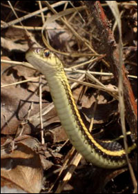

SOCIETY INFO
ERAS RESCUE
CONSERVATION
EDUCATION
ALBERTA LINKS
WORLD LINKS
FOLLOW ERAS ON


UPCOMING EVENTS
2016
Upcoming Meetings:
September 20thOctober 18th
November 15th
Upcoming Events:
October 8th and 9th - ERAS Fall ExpoMore info.
CONTACT INFO
Standard Mail:
Edmonton Reptile and Amphibian Society
Box 52128
10907 - 82AVE
Edmonton, AB
T6G 1C0
Phone/Rescue Line:
780-429-0934
Via E-MAIL: HERE

On a private piece of land West of Edmonton exists a well-known gartersnake hibernaculum. Here, the red sided gartersnake, Thamnophis sirtalis parietalis spends it’s winters in a torpid slumber awaiting the warmth of spring. Each year these snakes have gathered in the fall, and then appear again en masse to breed as they exit in the spring. First, the males will appear, often when snow still covers much of the ground. Basking in the sun, they await for the larger females to come out. Upon there arrival the individual females are swarmed by many males in congregations known as mating balls. Interestingly enough, you won’t find any baby or young of the previous year at the hibernaculum. They hibernate alone elsewhere, often deep within ant nests. After mating the snakes disperse for the summer into the surrounding lands to forage. They will eat invertebrates, tadpoles, small fish, and occasional neonate rodents [3].
History: In 1999 over 1100 snakes were relocated to this den site from another hibernaculum that was threatened with developement [1]. Many of them
returned the following year and this put the current snake count to approximately 9000 snakes. Since then, although no actual counts have taken place, there
seems to be a trend towards lower numbers. Estimates as low as 1000 snakes have been given for it’s present state. Plans for another snake count for 2012 are
being worked on. The hibernaculum remains a popular local draw to the surrounding community. Unfortunately, this might be one of the main threats to the snake population. Snakes hide extremely well, and while large groups can be easy to see, undoubtably many individuals are accidentally stepped on by curious onlookers.
Snake Threats: The snakes face many threats. They have many natural predators including coyotes, fox, birds of prey, and members of the weasel family. Additionally, human pets can kill these snakes. Outdoor and stray cats are major predators within their home territory. Specifically to this densite, a local dog follows people to the snakes, and then playfully injures or kills many of them. As mentioned already, the snake population may also be “loved to death” by the many visitors. Accidental trampling of animals occurs to some degree, but the ground is also compacted around the hibernaculum. The den itself exists of a maze of crevices that go deep below the frostline. Foot traffic may seal off entrances and potentially prevent portions of the snake population from escaping. Removing snakes from the hibernaculum is a threat and has a direct effect on the next generation of snakes as they are being taken from a mating congregation.
Conservation: Snake hibernaculums are protected by law between September 1st and April 30th under Alberta’s Wildlife Act. All gartersnake species in Alberta are listed as Sensitive. This means that they may require special attention or protection to prevent them from becoming “At Risk” [2]. In 2009, in collaboration with the Edmonton Reptile and Amphibian Society, and the landowners, an information sign was built. The goal of this sign is to make visitors aware of their potential for causing the snake population harm and to be carefull. The sign was strategically placed to not attract attention from the road,
as well as to not give away the exact densite location. New to 2012, Alberta Fish and Wildlife officers will be working with volunteers to monitor and to proceed with legal action against those purposefully or carelessly harming snakes. The hibernaculum does exist on private property and minimally, tresspassing charges can be made. If the hibernaculum continues to face human related threats, then the landowner has made it clear that the area will be closed to all visitors.
Things you can do to protect the Eden Lake Hibernaculum:
1) Tread carefully when approaching the hibernaculum to view. View from a few metres away and do not walk across the “snake pit” at the base of the
hill.
2) Do not bring dogs or other pets with you to the hibernaculum. Do not let the neighbor’s dog follow you.
3) Keep children under control. This is an excellent learning opportunity for them, but they must understand that the hill and it’s trees are not
a playground. No one should be climbing the hill as this may trample alternative entrance/exits to the hibernaculum.
4) Park at the road and walk. No vehicles should be brought onto the property.
5) Avoid or minimize handling. Do not remove snakes for any reason.
6) Lastly, keep this treasure a secret. The site does not have the facilities to handle many people, so when you tell a friend, and they tell 3 friends, and
so on. This may sound selfish, but the snake’s safety is the priority here.
For more information, questions, concerns, or to report problems at the densite, please contact Ian Kanda at president@edmontonreptiles.com
References:
[1] Takats, L. 2002. Red-sided garter snake (Thamnophis sirtalis parietalis) relocation and
education project – Final report. Alberta Sustainable Resource Developement, Fish and
Wildlife Division, Alberta Species at Risk Report No. 30. Edmonton, AB. 18pp.
[2] Government of Alberta – Sustainable Resource Developement.
Sensitive Species Inventory Guidelines August 2010 Update
[3] The Amphibians and Reptiles of Alberta. Anthony P. Russell and Aaron M. Bauer 2000